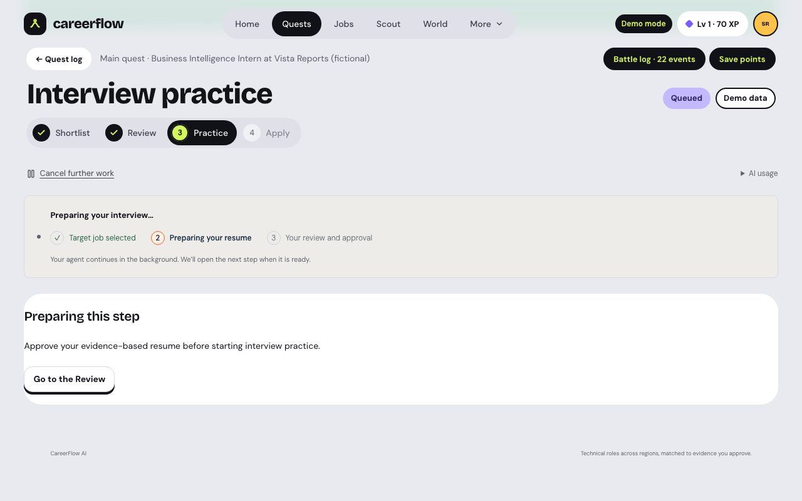
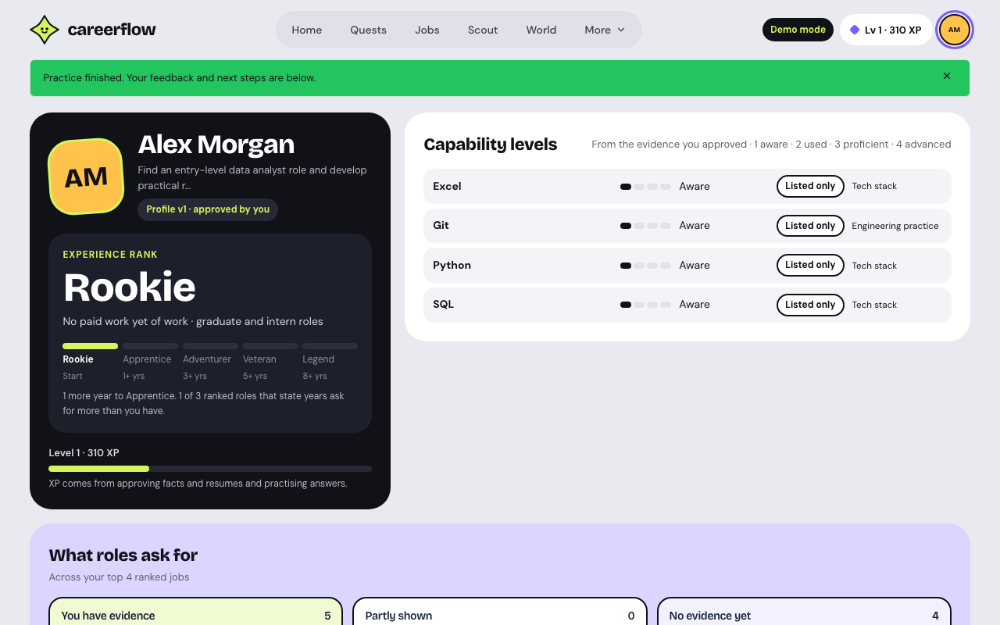

Talk it out
The Profile Builder asks one question at a time and writes down your words, not a polished version of them. Nothing counts until you approve it.
CareerFlow sends a team of agents to find tech roles across regions, show what each one really asks for, and tailor a resume from things you actually did. You still press apply.
Sign up, tell the Profile Builder what you've done, pick a role, approve a resume, get grilled by the Panel. Fictional candidate, real screens, sped up a little.
The Profile Builder asks one question at a time and writes down your words, not a polished version of them. Nothing counts until you approve it.

Every role gets a match score and the requirements you can't show yet, before you spend an evening on it.

The Rewriter and the Critic tailor a resume per role. Every line points back to something you approved. Send it back if it sounds off.

The Panel asks role-specific questions, follows up once, and scores your answer against STAR. Type it, record it, or talk to it live.

Your experience rank and per-skill levels come from evidence you approved, so you know which roles are a stretch and which are a fit.

Scout re-checks the boards on a schedule and only bothers you about new roles above your bar.
No invented metrics, titles or skills. If you didn't say it and approve it, it isn't on the page.
CareerFlow gets you ready. Hitting submit on a real application is always your call.
Every profile change and every resume version waits for your OK, tied to the exact version you saw.
The full workbench isn't public yet. Leave an email and you'll hear from us once, when it is.